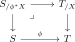
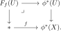
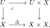
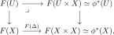

\[T \;\simeq\; \Topos^{\et}_{/T}, \qquad X \longmapsto T_{/X}.\]
In particular, \(\Topos^{\et}_{/T}\) is a \(1\)-category.
For every morphism of topoi \(\phi\colon S \to T\) and every \(X \in T\), the square

is a pullback in \(\Topos\). In particular, the category \(\Topos^{\et}\) admits pullbacks, and the inclusion \(\Topos^{\et} \hookrightarrow \Topos\) preserves pullbacks.
Proof
Given a morphism of topoi \(\phi\colon S \to T\) and an object \(X \in T\), we claim there is a natural equivalence
This immediately gives (2), and it gives (1) by taking \(S = T_{/Y}\) and noticing that \(\Hom_{T_{/Y}}(Y,X \times Y) \simeq \Hom_T(Y,X)\).To prove the claim, we will start by producing a natural equivalence
induced by the diagonal \(\Delta\colon X \to X \times X\), viewed as a morphism in \(T_{/X}\). Since \((X,\id_X)\) is terminal in \(T_{/X}\), we have \(F(X) \simeq *\). Moreover, because \(F\) is a functor under \(T\), we identify \(F(X \times X)\) with \(\phi^*X\). So \(f_F\) is a point in \(\Hom_S(*,\phi^*X)\).
Conversely, given a morphism \(f\colon * \to \phi^*X\), define \(F_f\colon T_{/X} \to S\) by sending \(U \to X\) to the pullback

The functor \(F_f\) preserves finite limits because it is the composite of \(\phi^*\colon T_{/X}\to S_{/\phi^*X}\) with pullback along \(f\). It also preserves colimits: the first functor does so objectwise, while the second does so by descent in \(S\). When \(U=X\times Y\) for some \(Y\in T\), we have \(F_f(U)\simeq\phi^*(Y)\), showing that \(F_f\) is a functor under \(T\).
Now, applying \(F_{f}\) to the diagonal map \(\Delta\colon X \to X \times X\) reproduces the original map \(f\). Conversely, given any left exact functor \(F\colon T_{/X} \to S\) under \(T\) and any \(U \in T_{/X}\), we may always write \(U\) as the pullback in \(T_{/X}\) of the diagram

and thus we get a pullback square

showing that \(F\) is naturally equivalent to \(F_{f_F}\). This constructs the equivalence \(\Fun^{\lex}_{T/}(T_{/X}, S) \simeq \Hom_S(*,\phi^*X)\). The preceding description of \(F_f\) also shows that every such left exact functor preserves colimits. Hence the forgetful functor